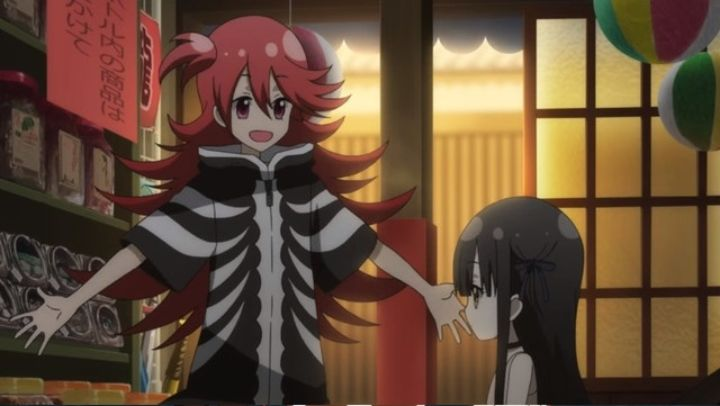

There's so much in original anime films to watch these days, from high to low profile, with some of the more notable ones still not being localized outside of Japan. But sometimes, a publisher will license something I haven't heard of, and I'm tempted to buy it blind. After all, movies are relatively short and cheap compared to a 12-episode season, right? This is how I came across the 2019 movie "Laidbackers," by Studio Gokumi, and licensed by Sentai Filmworks. A movie so short, I thought it was an OVA (although "film" is how it seems to be labelled online). A movie so unknown, that at the time of writing, no Wikipedia page existed for it (not a good sign). And while the risk of trying something new sometimes pays off, I was left underwhelmed with this one.When you get past all the fantasy jargon and character interactions, there's actually an interesting core premise. Anime has become obsessed with the "isekai" genre, where a modern-day Japanese person gets whisked to a fantasy-RPG world has uses their modern knowledge to get by. In "Laidbackers," we instead get fantasy heroes sucked into the real, modern-day Japan! In their original world, a band of heroes were fighting against a merciless evil Queen, a cruel and violent place to be. Upon nearly defeating the Queen after a grueling war, she makes a desparate move to cast her soul into demon shards, and to teleport them (and herself, and the heroes) to an alternate world. In modern Japan, they've all taken new bodies (usually the form of cute young girls, although their tactics leader has taken the form of a fluffball dog). They make their home in a small candy store (much to the annoyance of the young woman running the place), while preparing to hunt monsters and collecting the evil shards. So yes, there's a novelty here. It's fun to see warriors that only knew bloodshed try to understand Japanese culture, with its stable government and lack of war. The evil Queen herself has completely lost her memory during the spell, and took the body of a moe-cute 8-year-old: instead of plotting revenge, she actually helps her warrior enemies to collect the shards, while complaining about her first-grade summer homework. The Queen's new identity is adorable, and allows for a lot of opportunity: she's truly innocent and regretful of what the others say she did in the prior world, but what would she be like if she got her memories back?  ... But we don't get that far. This isn't a series, it's a short movie.The other characters range across the typical archtypes. The redhead is the violent berserker who's now obsessed with the hobby of food, there's a bluehead warrior that's now obsessed with being a pop-idol, there's a science/magic wielder who's fallen for boys-love manga, etc. They didn't have hobbies in their prior world, since they were so busy fighting, and have trouble grasping the concept of hobbies in Japan while balancing their sworn duties. This results in some light comedy as the group lazes around (hence the title that they're "laidback"). Instead of action, like I expected, this is much more of a "slice-of-life-cute-girls-doing-cute-things" sort of show.... except it's not a show. This isn't a series, it's a short movie."Laidbackers" really feels like a 2-episode pilot to a potential series rather than a stand-alone story. But even if this was stretched out to a full season, getting a full story with a beginning, middle and end... I still don't think it'd be particularly noteworthy. For this to have worked, it would need a stellar ending, and some serious production values to hype of the action. And for that matter, more action scenes to begin with. Unfortunately, the production values are also kind of barebones. It's servicable for a television series from 2011, but certainly not for a theatrical anime movie in 2019. Characters are cute and colorful, but otherwise they and the environments are kind of dull in their rendering. I was at least hoping for some higher degree of animation during the fight scenes, but those aren't any better at all.Upon reading some older articles, I found that the studio was pitching the movie as the "last original theatrical anime of the Heisei era" (a significant moment was taking place with a change in Emperor). This is NOT a project worthy of such a label, and I wonder if it was rushed in order to meet that deadline. The one good thing is that this has a killer opening and ending theme. And the Japanese acting was fine (no English dub available)."Laidbackers" is a pretty good example of "meh," the type of anime that is quickly forgotten, even though it isn't bad enough to be offensive. There is a seed of an interesting idea in its premise and villain, but the execution doesn't justify the existance of it.
- "Ani" More reviews can be found at : https://2danicritic.github.io/ Previous review: review_Kyousougiga Next review: review_Last_Exile